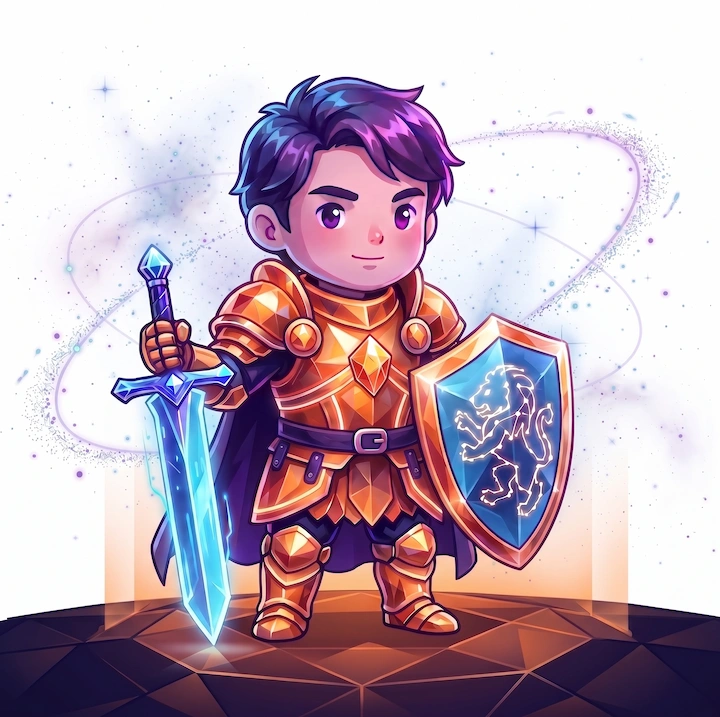

Une visión técnica y creatividad para que cada entrega avance con propósito. Piensa el diseño como un sistema: cada decisión tiene impacto en el todo y trabaja para que la experiencia final sea coherente y memorable.
Habilidades Destacadas
HTML
Javascript
Git/GitHub
UI/UX
* Pasa el cursor por las habilidades para interactuar.
Series favoritas
- The Big Bang Theory
- Breaking Bad
- Dexter
Libros Favoritos
- 1984
- Un mundo feliz
- Rebelión en la granja